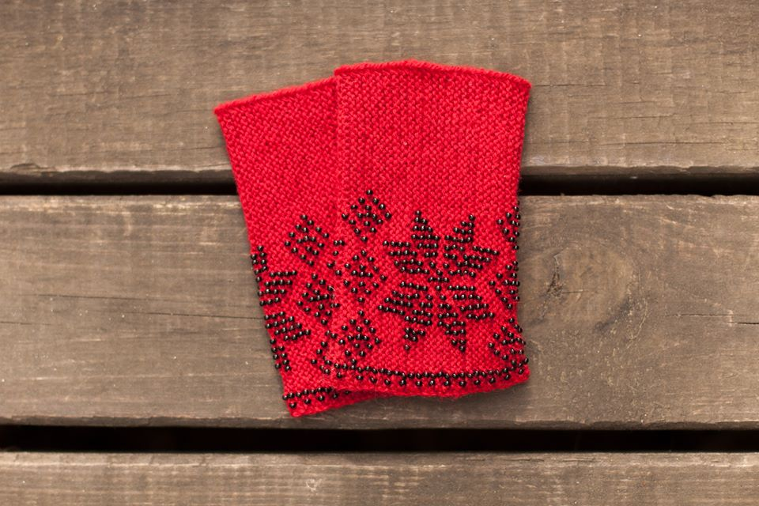
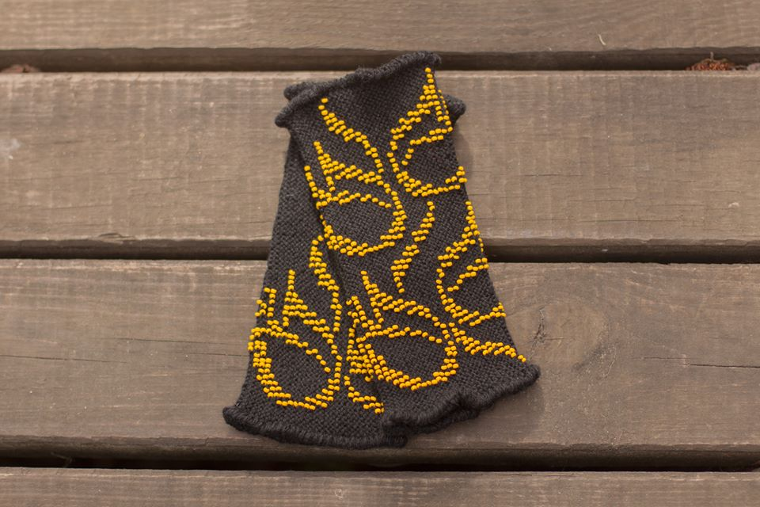

About me
Hi. I am Kristina and this is my first web page (hope not the last one) :)
About my mother
My mother as far as I remember always was interested in handicrafts and tried to teach us (me, my sisters and brother) that. So most of the time she knittes and one of her beautiful handicrafts are warm wristlets. Wanna see them? Go!
Wristlets
These are some of wristlets: warm, decorated with beads, various colours, sizes and patterns. These are not only ones: you can get whatever you want (if you know what you want)!

Yellow beads will let you be noticed in the crowd

Flowers will let you feel more beautiful
Red wristlets with snowflakes-you will be the queen of the evening!
Violet wristlets for the special ocasions
Brown and yellow-to remember the summer

Long brown wristlets-to your cold evenings

White and black wristlets-maybe for your cold winter wedding?

Casual grey and white-simple wristlets

Blue butterfly in the blue sky
Contact us
If you want to have one, please contact us:
Write to handicrafts.ltu@gmail.com
Find us in facebook group: Woolen wristlets (for beauty, warmth and health)